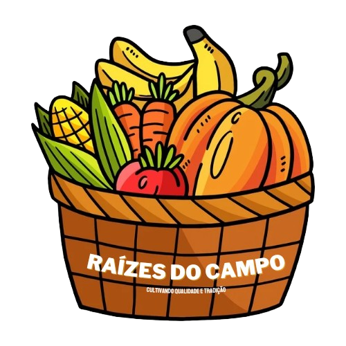
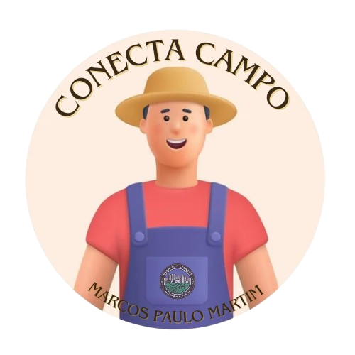
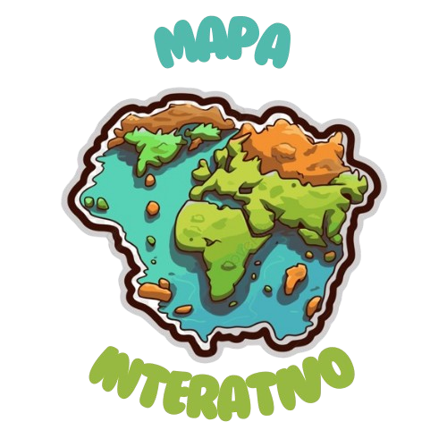

Bem-vindos
Conheça Nossa Página
Bem-vindo à FarmCity Connect! Esta plataforma tem como objetivo conectar produtores rurais e consumidores, promovendo a venda direta de produtos frescos e de qualidade. Aqui você encontra:

Loja Virtual

Produtores
Receitas

Mapa Interativo
A FarmCity Connect é uma iniciativa inovadora que visa a melhorar a conexão entre produtores rurais e consumidores finais, facilitando o acesso a produtos frescos e de qualidade.